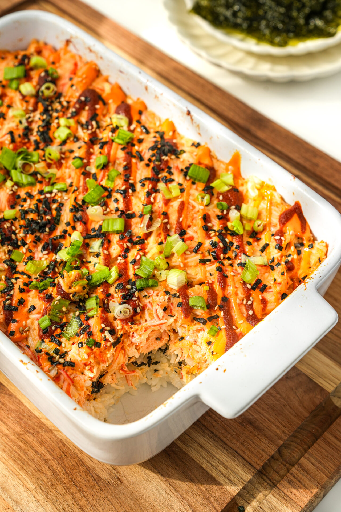

Sushi Bake
Home

This is a great sushi bake recipe from me personally, your welcome
Ingredients:
- sushi rice
- canned tuna
- furikake
- bagel seasoning
- rice vinegar
- kewpie mayonnaise
- siracha sauce
- sugar
- salt
- seaweed snacks
- green onion
- imitation crab
- cream cheese
- oil
Part 1: Preparing Sushi Rice
- Cook sushi rice
- Mix rice vinegar, sugar, and a pinch of salt: 1 cup of rice = 1 tbsp of equal parts vinegar and sugar
- Add in sushi rice to the mixture: keep folding instead of separating
Part 2: Preparing Crab/Tuna Mixture
- Defrost imitation crab and add shredded pieces into bowl
- Mix Crab and tuna in bowl
- Add in Kewpie Mayonnaise
- Add in a bit of cream cheese (optional)
- Add in a bit of sriracha
- Add in green onions
- Mix Crab and tuna in bowl
- Add in Kewpie Mayonnaise
- Add in a bit of cream cheese (optional)
- Add in a bit of sriracha
Part 3: Preparing Baking Pan
- Add in oil and rub excess with a paper towel to prevent sticking to pan
- Scoop rice into baking pan and press it into pan (until about half)
- Add in bagel seasoning/furikake (or crush some seaweeds sheets on top)
- Add in a bit of cream cheese (optional)
- Top it off with crab/tuna mixture
- Add in more mayo and more bagel seasoning on top (optional)
Part 4: Cooking
- Preheat 400 degree oven and keep it in for 20 minutes (half bake half broil)
- Serve hot with seaweed sheets